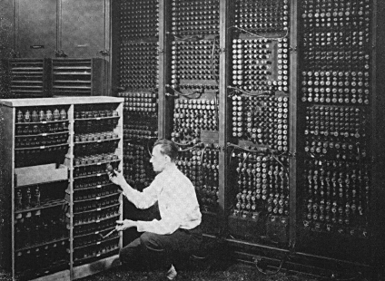

Киселото мляко
Може би най-известното по света изобретение на българина е киселото мляко. Откривателят на кисело-млечната бактерия, която придава специфичния вкус на млякото ни, е доктор Стамен Григоров.Роден е през 1878 година. Следва „Естествени науки“ в Монпелие. Прави докторантура по медицина в Женевския университет. Работи в Женевския университет като асистент на проф. Леон Масол, професор по бактериология. Той оценява ерудицията на младия българин и го насочва в научните му занимания, осигурява му достъп до модерни лаборатории, в които да изследва киселото мляко, изпращано от съпругата му Даринка от България.
През 1905 г. д-р Стамен Григоров за пръв път описва млечнокиселия микроорганизъм, който предизвиква ферментацията, необходима за получаване на българско кисело мляко. Първоначално описва млечнокиселата пръчица като „Бацил А“. По-късно микроорганизмът е наречен „Лактобацилус булгарикус“, в чест на родината на неговия първооткривател. Днес официалното име на този микроорганизъм е „Lactobacillus delbureckii subsp. bulgaricus Grigoroff 1905“.
Прочетете още за Стамен Григоров
Към съдържание
Компютърът

Първият електронен, непрограмируем компютър е изобретен от Джон Атанасов - американски физик, математик и електроинженер от български произход. След опити с различните налични по това време сметачни устройства Атанасов пръв въвежда понятието „аналогов компютър“. През 1936 г. заедно с Глен Мърфи, колега атомен физик, създават малък аналогов калкулатор за изследване на геометрията на повърхности, който наричат „Лапласиометър“. Атанасов установява, че той има същите недостатъци като всички други аналогови устройства – точността му зависи от работата на други части на машината.
Прочетете още за Джон Атанасов
Към съдържание
Електронният часовник
Първият дигитален ръчен часовник е изобретен от българския инженер и изобретател Петър Димитров Петров. Определят го като един от най-продуктивните изобретатели през втората половина на XX век. Сред изобретенията му, освен първият дигитален ръчен часовник, са първата компютъризирана система за измерване на замърсявания, телеметрични устройства за метеорологични и комуникационни сателити, първият в света безжичен сърдечен монитор, както и множество други апарати и авторски методи. Той е носител на многобройни признания и награди. Морският нос Петров на остров Брабант в Антарктика е наименуван в чест на Петър Петров.
Прочетете още за Петър Димитров Петров
Към съдържание
Първото обработено злато на света
Във Варна се пази най-старото злато на Земята. То е било открито във варненския Некропол. Смята се, че находките от "Варненското злато" са най-старото технологично обработено злато в Европа и света, причислявано към т. нар. Култура Варна (4400 - 4100 г. пр. Хр.).
Прочетете още за златното съкровище
Към съдържание